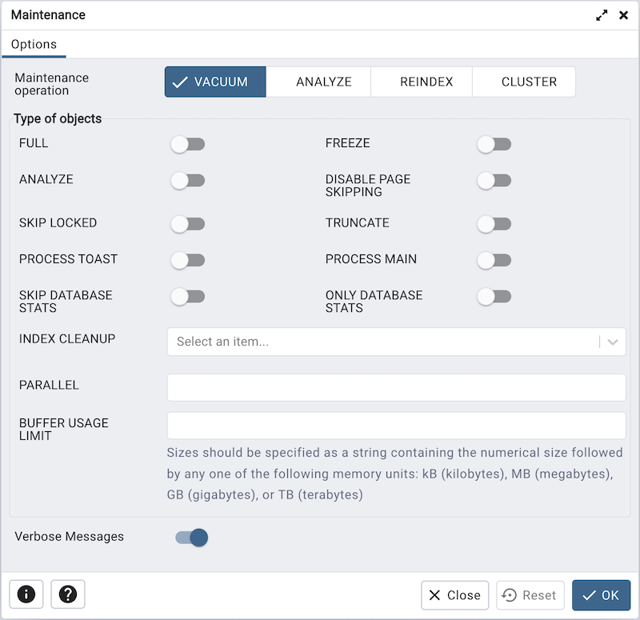

Maintenance Dialog¶
Use the Maintenance dialog to VACUUM, ANALYZE, REINDEX or CLUSTER a database or selected database objects.
While this utility is useful for ad-hoc maintenance purposes, you are encouraged to perform automatic VACUUM jobs on a regular schedule.
Select a button next to Maintenance operation to specify the type of maintenance:
Click VACUUM to scan the selected database or table to reclaim storage used by dead tuples.
Move the FULL switch to the Yes position to compact tables by writing a completely new version of the table file without dead space.
Move the FREEZE switch to the Yes position to freeze data in a table when it will have no further updates.
Move the ANALYZE switch to the Yes position to issue ANALYZE commands whenever the content of a table has changed sufficiently.
Move the DISABLE PAGE SKIPPING switch to the Yes position to disables all page-skipping behavior.
Move the SKIP LOCKED switch to the Yes position to specifies that VACUUM should not wait for any conflicting locks to be released when beginning work on a relation. This option is available from v12 onwards.
Move the TRUNCATE switch to the Yes position to specifies that VACUUM should attempt to truncate off any empty pages at the end of the table and allow the disk space for the truncated pages to be returned to the operating system. This option is available from v12 onwards.
Move the PROCESS TOAST switch to the Yes position to specifies that VACUUM should attempt to process the corresponding TOAST table for each relation, if one exists. This option is available from v14 onwards.
Move the PROCESS MAIN switch to the Yes position to specifies that VACUUM should attempt to process the main relation. This option is available from v16 onwards.
Move the SKIP DATABASE STATS switch to the Yes position to specifies that VACUUM should skip updating the database-wide statistics about oldest unfrozen XIDs. This option is available from v16 onwards.
Move the ONLY DATABASE STATS switch to the Yes position to specifies that VACUUM should do nothing except update the database-wide statistics about oldest unfrozen XIDs . This option is available from v16 onwards.
Use the INDEX CLEANUP field to force VACUUM to process indexes when there are more than zero dead tuples.
Use the PARALLEL field to specify index vacuum and index cleanup phases of VACUUM in parallel using integer background workers. This option is available from v13 onwards.
Use the BUFFER USAGE LIMIT field to specifies the Buffer Access Strategy ring buffer size for VACUUM. This size is used to calculate the number of shared buffers which will be reused as part of this strategy. This option is available from v16 onwards
Click ANALYZE to update the stored statistics used by the query planner. This enables the query optimizer to select the fastest query plan for optimal performance.
Move the SKIP LOCKED switch to the Yes position to specifies that ANALYZE should not wait for any conflicting locks to be released when beginning work on a relation. This option is available from v12 onwards.
Use the BUFFER USAGE LIMIT field to specifies the Buffer Access Strategy ring buffer size for ANALYZE. This size is used to calculate the number of shared buffers which will be reused as part of this strategy. This option is available from v16 onwards
Click REINDEX to rebuild any index in case it has degenerated due to the insertion of unusual data patterns. This happens, for example, if you insert rows with increasing index values, and delete low index values.
Move the SYSTEM switch to the Yes position to recreate all indexes on system catalogs within the current database. This option is enabled only when database object is selected.
Move the CONCURRENTLY switch to the Yes position to rebuild the index without taking any locks that prevent concurrent inserts, updates, or deletes on the table. This option is available from v12 onwards.
Use the TABLESPACE field to specifies that indexes will be rebuilt on a new tablespace. This option is available from v14 onwards.
Click CLUSTER to instruct PostgreSQL to cluster the selected table.
To exclude status messages from the process output, move the Verbose Messages switch to the No position; by default, status messages are included.
When you’ve completed the dialog, click OK to start the background process; to exit the dialog without performing maintenance operations, click Cancel.
pgAdmin will run the maintenance process in background. You can view all the background process with there running status and logs on the Processes tab.